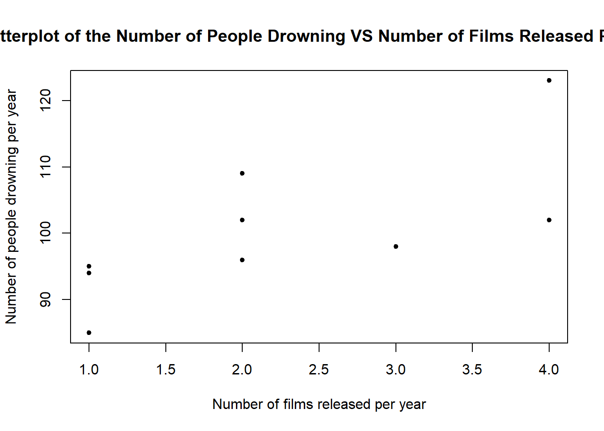
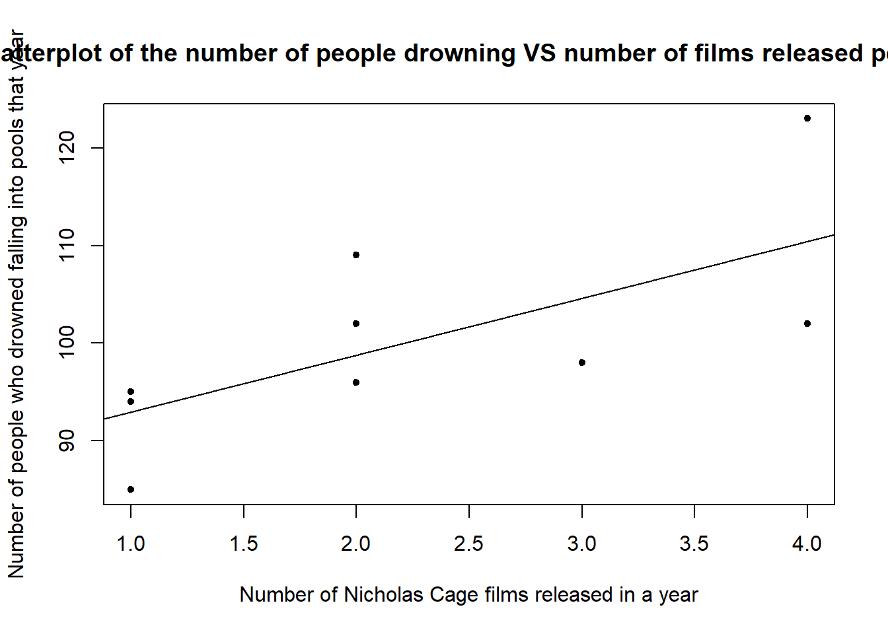

4 Exercise 3: Spurious correlation
Hollywood legend Nicholas Cage seems to have a problem. It appears that every time he releases a new film upon the world, many people drown by falling into pools of water. Coincidence? Or, are some of his films that bad?
Data: Cage.csv
Columns:
To access the data, download the file Cage.csv from Moodle and make sure it is saved in an accessible file. The working directory of your RStudio Session should be set to that folder. Once this is done, read in the data using:
4.1 Investigating a relationship with regression
To investigate the relationship between the number of films released in any year against the number of people drowning we should make a scatterplot.
1a) Produce a scatterplot of NumDrowned \(y\) against NumFilms \(x\) with labels and a sensible title.
You can use plot() such as in the previous example with Grades. Or you can refer to previous weeks labs and use ggplot()
plot(NumDrowned ~ NumFilms, data = Cage, xlab = "Number of films released per year", ylab = "Number of people drowning per year", main="Scatterplot of the Number of People Drowning VS Number of Films Released Per Year", pch=20)
1b) Create a linear model for this data and add it to your scatterplot.
The function lm() should be used. Remember to specify the correct column names you want to compare and the dataset they are found in.
##
## Call:
## lm(formula = NumDrowned ~ NumFilms, data = Cage)
##
## Coefficients:
## (Intercept) NumFilms
## 87.134 5.821plot(NumDrowned ~ NumFilms, data = Cage, xlab = "Number of Nicholas Cage films released in a year", ylab = "Number of people who drowned falling into pools that year", main="Scatterplot of the number of people drowning VS number of films released per year", pch=20)
abline(model)
1c) What is a sensible interpretation of this model and the relationship between the number of films released in any year against the number of people drowning?
The relationship appears linear and positive on the plot and the coefficient of x in our model NumDrowned = 87.134 + 5.821*NumFilms is also positive reinforcing this suggestion.
4.2 Further analsyis with a Correlation Coefficient
## [1] 0.6660043How should we interpret these results?
Does this mean that Nicolas Cage films are causing drownings? Quite obviously, the answer to this would be no. This is only correlation not causation. Additionally these results were taken from an observational study not an experiment so causation could not be commented on here.
4.3 Spurious Correlation
This is an example of spurious correlation, where two variables that are not related to each other in any way, that is, they are independent, could be inferred as being related. The number of Nicholas Cage films released in a year is clearly not related to the number of drowning accidents in that same year, but if we just take our correlation hypothesis test on face value, then we would think otherwise.
Reference: Spurious Correlations, Tyler Vigen